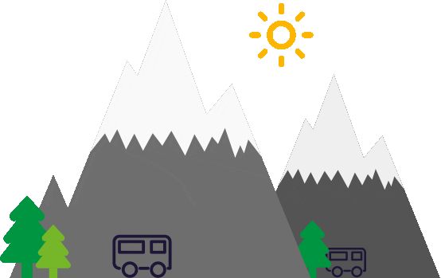
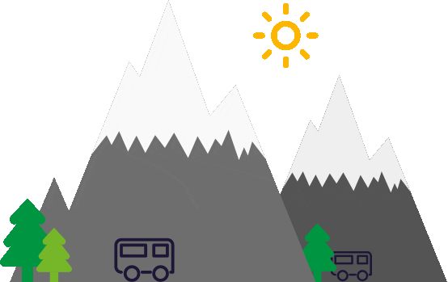

I'm Reshma
I am a programmer.



I am an aspiring web developer.I love crochetting and doing other arts and crafts during my free time.

I have gained experience in Pentaho report designing and mysql .
My favourite hobby is to create something different everytime.Crochet-droplets is an insta space where I showcase my creations.
Love to code as much as I do?Lets talk about its possibilities!
And we can crochet during leisure hours!